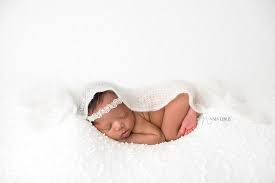

Heading one
Heading two
Heading three
New Babies are so cute and adorables


Best Things About Newborns: They Love You
Totally and utterly, unconditionally, and with every fibre of their being, newborns love their parents. In fact, Your baby thinks he and you are one! He remembers your voice from when he was snuggled up in your uterus, and he loves the smell of you. You know how you are blown away by just how much you love your baby? Well, guess what, that’s how much he loves you and being in your arms.
Best Things About Newborns: The Way They Make You Feel
There’s no confidence boost in the world quite like that of knowing that you created from scratch, grew, birthed and nurtured a baby. Really, what could be more important than all of that? You have done something amazing, and your newborn baby is living proof of that. Holding your baby in your arms reminds you that you are Wonder Woman and have done something to be proud of.